中国疫情蔓延初步遏制，全球何以多地聚集感染？
原文链接 备份链接 IMF认为，若一切向好的方向发展，中国经济有望从二季度开始恢复正常。近日个别国家和地区确诊病例激增，确诊首例新冠病毒感染病例的国家和地区也在增加，是新感染群体的感染源越来越难以查明？还是疫情传播到了某个新的临界点？ …

三十多天来，这座城市发生了什么，经历了什么，我们用31张照片，拼接成武汉影像日历，与大家一同铭记。
全文8976字，阅读约需16分钟
点击下图进入阅读新京报特别策划

编辑 陈婉婷 校对 吴兴发
2020年1月23日凌晨2点，武汉市新冠肺炎疫情防控指挥部发布第1号通告，为控制新冠肺炎疫情进一步传播，自2020年1月23日10时起，全市城市公交、地铁、轮渡、长途客运暂停运营；无特殊原因，市民不要离开武汉，机场、火车站离汉通道暂时关闭。恢复时间另行通告。
武汉全城，大门暂封。
三十多天来，这座城市发生了什么，经历了什么，我们用31张照片，拼接成武汉影像日历，与大家一同铭记。
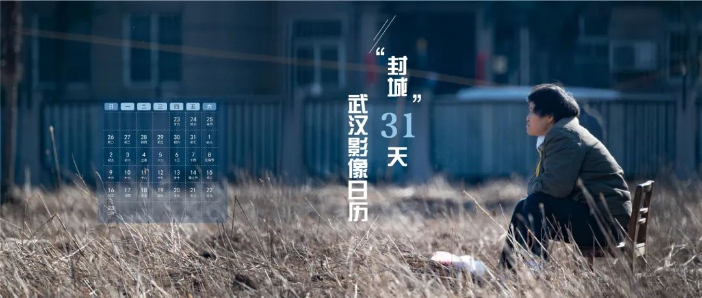
▲封面摄影/新京报记者陶冉 新媒体设计/许骁
━━━━━
- 1月23日 -
大年二十九
截至当日24时，全国累计报告确诊病例830例，死亡25例，治愈出院34例。
湖北省累计报告确诊病例549例（武汉市495例），死亡24例，治愈出院31例。
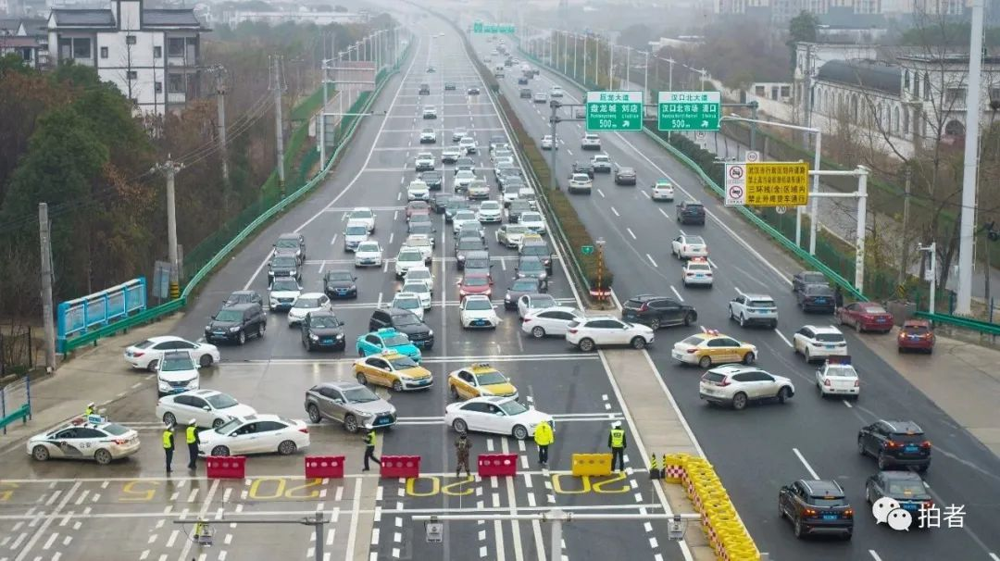
▲ 下午5时，湖北武汉北大门岱黄高速府河收费站关闭，大量准备离开武汉的车辆在交警的指挥下掉头。摄影/长江日报记者陈卓
焦点事件
▼
国家卫健委公布《新型冠状病毒感染的肺炎诊疗方案(试行第三版)》，方案显示：截至目前搜集到的病例，显示无华南海鲜市场暴露病史病例在增加，并出现了聚集性病例和无武汉旅行史的确诊病例，而且在境外多个国家和地区发现了来自于武汉的无明确市场暴露史的确诊病例。
下午，武汉市城建局紧急召集中建三局等单位举行专题会议，要求参照2003年抗击非典期间北京小汤山医院模式，在武汉职工疗养院建设一座专门医院——武汉蔡甸火神山医院，集中收治新冠肺炎患者。
19时，湖北省召开新冠肺炎疫情防控工作新闻发布会。湖北省文化和旅游厅党组成员、副厅长徐勇在会上表示，即日起，武汉市经营性文化娱乐场所暂停营业。
━━━━━
- 1月24日 -
大年三十
截至当日24时，全国累计报告确诊病例1287例，死亡41例，治愈出院38例。
湖北省累计报告确诊病例729例（武汉市572例），死亡39例（武汉市38例），治愈出院32例。

▲除夕夜，武汉一小区里亮起的灯光。摄影/@白石屹
焦点事件
▼
国家开发银行24日向武汉市发放应急贷款20亿元，用于支持武汉市做好新冠肺炎防控工作。
经中央军委批准，军队从陆军、海军、空军三所军医大学各抽调150人，组建支援湖北地区应对新冠肺炎疫情医疗队，已于24日夜间抵达武汉。
━━━━━
- 1月25日 -
正月初一
截至当日24时，全国累计报告确诊病例1975例，死亡56例，治愈出院49例。
湖北省累计报告确诊病例1052例（武汉市618例），死亡52例（武汉市45例），治愈出院42例（武汉市40例）。
▲武汉市新型肺炎防控指挥部发布第9号通告后，许多市民驾车涌向超市采购生活必需品。摄影/长江日报记者陈卓
焦点事件
▼
武汉市新型肺炎防控指挥部发布第9号通告宣布，自2020年1月26日零时始，除经许可的保供运输车、免费交通车、公务用车外，中心城区区域实行机动车禁行管理。
武汉市防疫指挥部举行调度会，决定在武汉蔡甸火神山医院之外，半个月之内再建一所“小汤山医院”——武汉雷神山医院，新增床位1300张。
武汉市红十字会发布急需医疗物资名单及境外捐赠说明。
━━━━━
- 1月26日 -
正月初二
截至当日24时，全国累计报告确诊病例2744例，死亡80例，治愈出院51例。
湖北省累计报告确诊病例1423例（武汉市698例），死亡76例（武汉市63例），治愈出院44例（武汉市42例）。
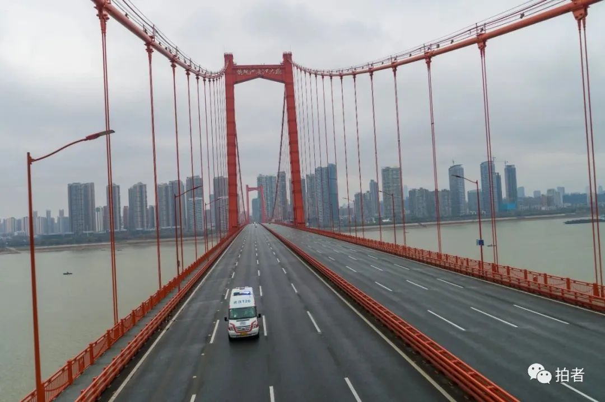
▲受“封城”和机动车禁行通知影响，鹦鹉洲长江大桥上行车寥寥，只有一辆救护车疾驶而过。摄影/长江日报记者陈卓
焦点事件
▼
国新办就新冠肺炎疫情防控举行发布会，交通运输部副部长刘小明表示，针对武汉医护人员、个别病人出行不便的问题，已和武汉交通部门沟通，建立应急出租车队，征用310台公交车，保障病人看病需要。
中国疾控中心首次从华南海鲜市场的585份环境样本中，检测到33份样品含有新型冠状病毒核酸，并成功在阳性环境标本中分离病毒，提示该病毒来源于华南海鲜市场销售的野生动物。
━━━━━
- 1月27日 -
正月初三
截至当日24时，全国累计报告确诊病例4515例，死亡106例，治愈出院60例。
湖北省累计报告确诊病例2714例（武汉市1590例），死亡100例(武汉市85例)，治愈出院47例。
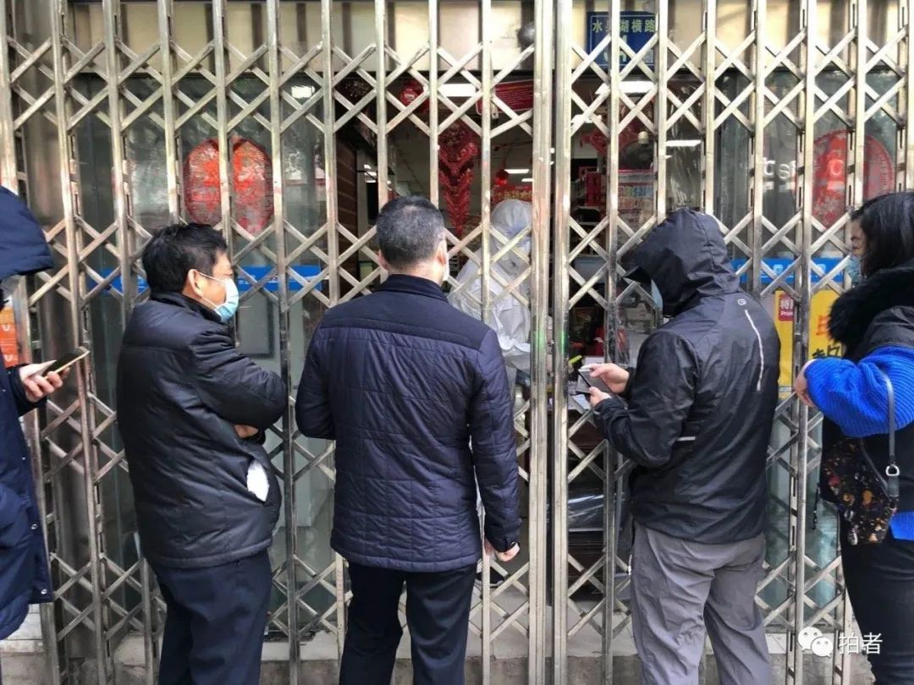
▲ 武昌区水果湖街道老百姓大药房，市民排队买药。摄影/马路遥
焦点事件
▼
针对有人反映武汉市红十字会在接受物资捐赠时要收取6%的手续费，时任武汉市委书记马国强回应称，此为不实消息。
武汉市长周先旺接受央视专访时坦承，这次疫情信息披露，既有披露不及时的一面，也有利用很多有效信息来完善工作不到位的一面。谈及“封城”这个重大决定，周先旺表示只要把疫情控制好，我们愿革职以谢天下。
━━━━━
- 1月28日 -
正月初四
截至当日24时，全国累计报告确诊病例5974例，死亡132例，治愈出院103例。
湖北省累计报告确诊病例3554例（武汉市1905例），死亡125例(武汉市104例)，治愈出院80例。
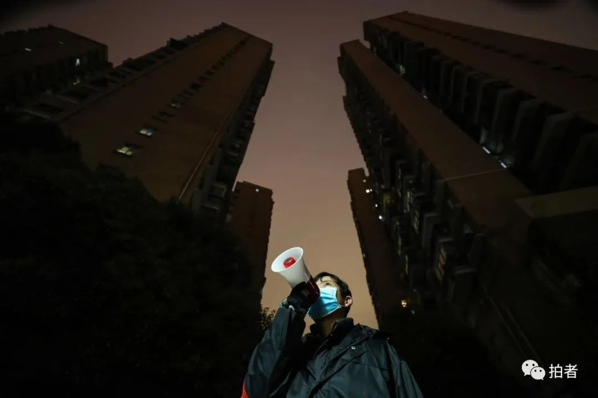
▲汉阳区西桥社区，社区保安李国华用喇叭提醒居民注意防疫。摄影/长江日报记者陈卓
焦点事件
▼
华中科技大学附属协和医院的15名被感染医护人员经过治疗后，临床症状得到有效控制，经专家组讨论，协和医院首批共有3名医护人员符合出院标准，于上午11时许出院。
武汉市民政局宣布对死于疫情的患者遗体免收火化费。
━━━━━
- 1月29日 -
正月初五
截至当日24时，全国累计报告确诊病例7711例，死亡170例，治愈出院124例。
湖北省累计报告确诊病例4586例（武汉市2261例），死亡162例(武汉市129例)，治愈出院90例。
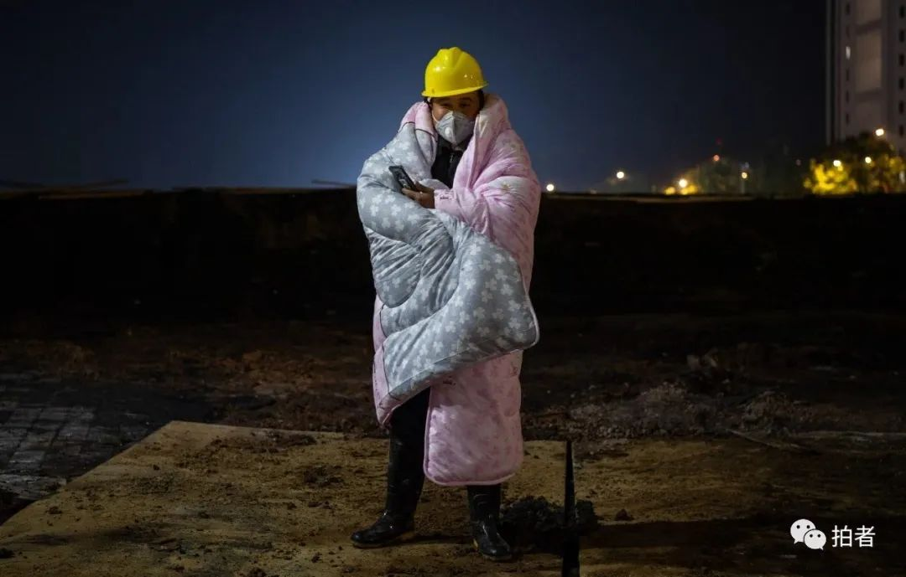
▲△凌晨，雷神山医院建设工地现场，由于夜间气温较低，工人身披被褥看护工地。摄影/拍者许星星
焦点事件
▼
国家卫生健康委就新冠肺炎疫情预防公众指导建议有关情况举行发布会，北京市方庄社区卫生服务中心主任吴浩在回应“500万人在春节前离开了武汉”的热点时表示：我们共同的敌人是疾病、是病毒，而不是武汉人。
━━━━━
- 1月30日 -
正月初六
截至当日24时，全国累计报告确诊病例9692例（四川省累计确诊病例核减1例），死亡213例，治愈出院171例。
湖北省累计报告确诊病例5806例（武汉市2639例），死亡204例（武汉市159例），治愈出院116例。
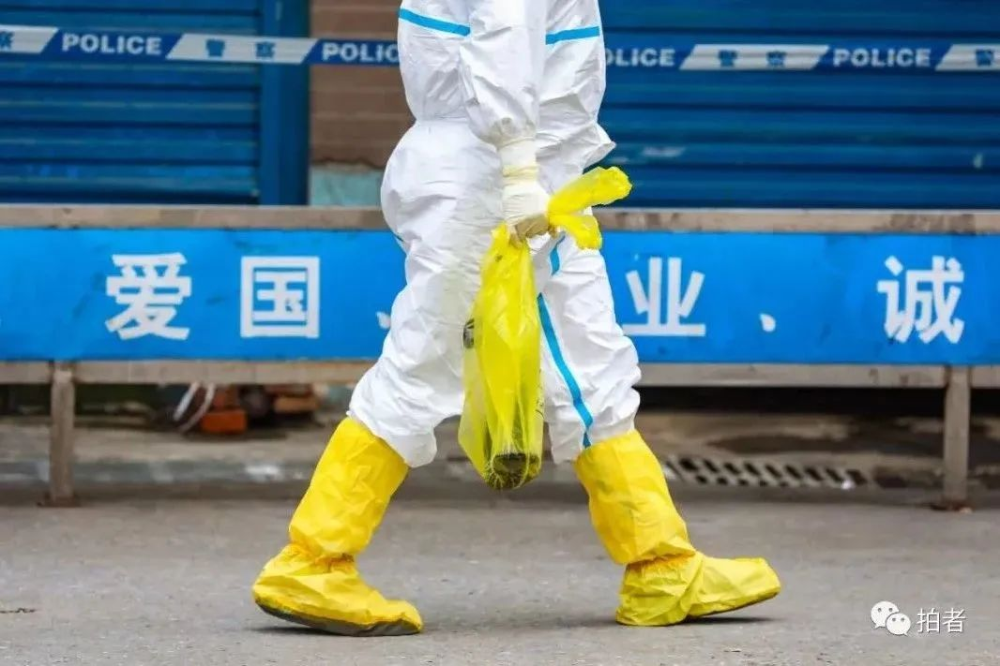
△ 华南海鲜市场商户门前，工作人员拎着一只大鲵（娃娃鱼）。摄影/长江日报记者陈卓
焦点事件
▼
关于网络上“山东寿光援助武汉350吨蔬菜，武汉市红十字会通过超市低价售卖”一事。武汉红十字会回应：未参与分配、售卖。
━━━━━
- 1月31日 -
正月初七
截至当日24时，全国累计报告确诊病例11791例（江西省、陕西省、甘肃省各核减1例），死亡259例，治愈出院243例。
湖北省累计报告确诊病例7153例（武汉市3215例），死亡249例（武汉市192例），治愈出院166例。

△ 硚口区，受新冠肺炎疫情影响，原定1月28日回江西南昌老家的魏先生一家取消了行程，早早打开店铺门为社区居民售卖新鲜蔬菜。摄影/拍者许星星
焦点事件
▼
针对公众对红十字会接收了大量物资但武汉市多家医院医疗物资依然告急的质疑，武汉市政府党组成员李强回应称，工作中存在差距，物资周转不够快、调拨不够及时。
━━━━━
- 2月1日 -
正月初八
截至当日24时，全国累计报告确诊病例14380例（广东省核减1例），死亡304例，治愈出院328例。
湖北省累计报告新型冠状病毒感染的肺炎病例9074例（武汉市4109例），死亡294例（武汉市224例），治愈出院215例。
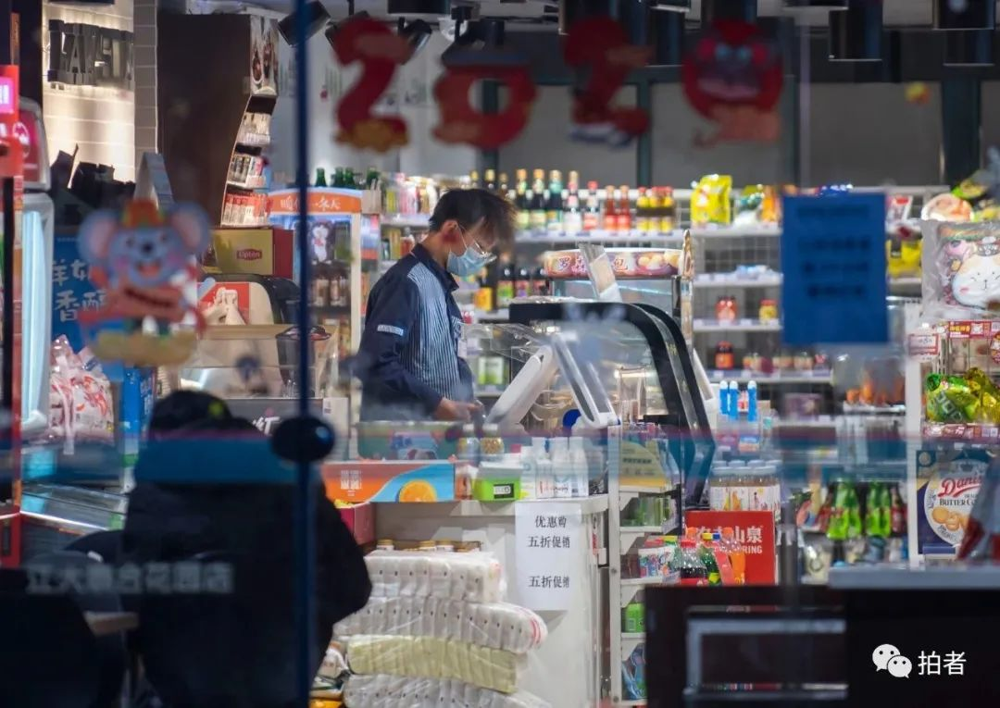
△ 蔡甸区，留守武汉的荆州人张先生。他告诉记者，这是当时距离十公里外的火神山工地最近并且还在营业的便利店了。摄影/拍者许星星
焦点事件
▼
中国红十字会党组书记、常务副会长梁惠玲率领总会工作组赶赴湖北武汉，指导、督促湖北省红十字会、武汉市红十字会做好新冠肺炎疫情防控工作。
感染新冠病毒的武汉市中心医院医生李文亮当天告诉新京报记者，其最新核酸检测结果为阳性。
━━━━━
- 2月2日 -
正月初九
截至当日24时，全国累计报告确诊病例17205例（北京市核减3例，江西省核减1例），死亡361例，治愈出院475例。
湖北省累计报告确诊病例11177例（武汉市5142例），死亡350例(武汉市265例），治愈出院295例。
△ 航拍火神山医院。摄影/拍者 许星星
焦点事件
▼
上午，武汉火神山医院举行交付仪式，武汉市市长周先旺和联勤保障部队白忠斌副司令员在武汉火神山医院签署互换交接文件，标志着火神山医院正式交付人民军队医务工作者。
武汉市新冠肺炎防控指挥部发布通告：拒绝配合隔离者将强制执行。
━━━━━
- 2月3日 -
正月初十
截至当日24时，全国累计报告确诊病例20438例（黑龙江省核减2例），死亡425例，治愈出院632例。
湖北省累计报告确诊病例13522例（武汉市6384例），死亡414例（武汉市313例），治愈出院396例。

△ 东西湖区径河街隔离点，医生蔡旭光询问患者病情。摄影/长江日报记者陈卓
焦点事件
▼
由中国工程院院士李兰娟领衔的浙江高级别专家组全面入驻武汉大学人民医院东院区的重症监护室、隔离病房、发热门诊，与本地专家展开合作。
━━━━━
- 2月4日 -
正月十一
截至当日24时，全国累计报告确诊病例24324例（海南省核减1例），死亡490例，治愈出院892例（海南省、湖北省各核减1例）。
湖北省累计报告确诊病例16678例（武汉市8351例），死亡479例（武汉市362例），治愈出院520例。

△ 落成2天后，火神山医院开始正式接诊新冠肺炎确诊患者。摄影/肖艺九
焦点事件
▼
武汉火神山医院开始收治新冠肺炎确诊患者。
《新型冠状病毒感染的肺炎诊疗方案（试行第五版）》发布，其中，将“疑似病例具有肺炎影像学特征者”作为湖北省临床诊断病例标准，这提示湖北地区新型冠状病毒诊断不再依赖核酸检测结果。
截至22时，武汉市已征用11家场馆改造成“方舱医院”。
━━━━━
- 2月5日 -
正月十二
截至当日24时，全国累计报告确诊病例28018例，死亡563例，治愈出院1153例。
湖北省累计报告确诊病例19665例（武汉市10117例），死亡549例（武汉市414例），治愈出院633例。

△ 深夜，民警在位于洪山体育馆的武汉大学人民医院武昌方舱医院外全副武装执勤。当晚，该方舱医院开始接收第一批轻度新冠肺炎患者。摄影/成都商报·红星新闻记者王效
焦点事件
▼
中科院武汉病毒所官网发布消息称在抑制2019新型冠状病毒药物筛选方面取得重要进展。相关研究成果以《瑞得西韦和磷酸氯喹能在体外有效抑制新型冠状病毒（2019-nCoV）》）为题发表在中国自主知识产权的国际知名学术期刊《细胞研究》上。
━━━━━
- 2月6日 -
正月十三
截至当日24时，全国累计报告确诊病例31161例，死亡636例，治愈出院1540例。
湖北省累计确诊病例22112例（武汉市11618例），死亡618例（武汉市478例），治愈出院817例。
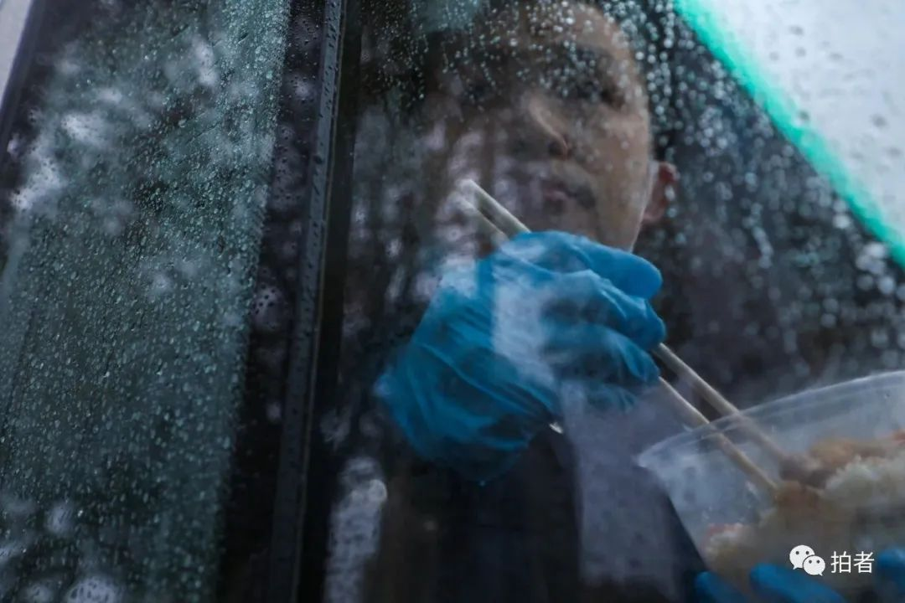
△ 晚餐时间，雨越来越大，负责值守火神山医院卡点的武汉市公安局蔡甸分局新农派出所民警燕占飞，在警车里边吃饭边观察着卡点周围的情况。摄影/长江日报记者陈卓
焦点事件
▼
针对曾举办“万家宴”的武汉百步亭社区有居民发热一事，2月5日，记者从百步亭社区悦秀苑居委会获悉，目前，居委会正在安排发热居民进行核酸检测，以便排查新冠肺炎患者。
武汉儿童医院确诊两例新生儿新型冠状病毒肺炎病例。最小的确诊宝宝出生仅30小时，该新生儿母亲为新型冠状病毒肺炎确诊患者。
武汉市卫健委发布通知，各定点收治医院从即日起，原则上只能收治确诊的重症病例和危重症病例，以及疑似的危重症病例。
武汉市市委副书记胡立山表示，对确诊患者、疑似患者、发热患者、密切接触者等4类人员分类集中收治隔离。
━━━━━
- 2月7日 -
正月十四
截至当日24时，全国累计报告确诊病例34546例（黑龙江省核减14例），死亡722例，治愈出院2050例。
湖北省累计报告确诊病例24953例（武汉市13603例），死亡699例（武汉市545例），治愈出院1115例。

△ 市民自发来到医院门前，悼念因感染新冠肺炎去世的李文亮医生。摄影/长江日报记者陈卓
焦点事件
▼
感染新冠肺炎的武汉市中心医院医生李文亮，于2020年2月7日凌晨2点58分去世。
李文亮去世后，湖北省卫健委、武汉市政府、武汉市卫健委发表公告哀悼。中国医师协会向李文亮医生表示沉痛哀悼。据中央纪委国家监委消息，经中央批准，国家监察委员会决定派出调查组赴湖北省武汉市，就群众反映的涉及李文亮医生的有关问题作全面调查。
武汉市人社局为李文亮医生做出工伤认定决定。
━━━━━
- 2月8日 -
正月十五
截至当日24时，全国累计报告确诊病例37198例（山西、黑龙江、河南、海南各核减1例），死亡811例，治愈出院2649例（黑龙江核减1例）。
湖北省累计报告确诊病例27100例（武汉市14982例），死亡780例（武汉市608例），治愈出院1439例。

△ 工作一天后，卸下防护装备的武汉协和医院肝胆-胰血管外科的护士覃芳芳脸上满是印痕。摄影/新京报记者陶冉
焦点事件
▼
据中央纪委国家监委网站消息，国家监察委员会调查组已抵达武汉。
武汉雷神山医院交付使用，收治首批患者。
中共中央批准王贺胜同志任湖北省委委员、常委。这是新冠肺炎疫情发生以来，中央首次调整湖北省委领导班子。
━━━━━
- 2月9日 -
正月十六
截至当日24时，全国累计报告确诊病例40171例（湖北核减87例，江西、甘肃各核减1例），死亡908例，治愈出院3281例。
湖北省累计报告确诊病例29631例（武汉市16902例），死亡871例（武汉市681例），治愈出院1795例。

△ 街头，一位市民戴着口罩踩平衡车经过。摄影/成都商报·红星新闻记者王效
焦点事件
▼
国务院联防联控机制举行新闻发布会，国家卫生健康委员会医政医管局监察专员郭燕红在回答记者提问时表示，目前，武汉医护人员支援力量已达到11000多人，但在重症治疗过程中，对专业人员资源的需求和缺口比较大。
━━━━━
- 2月10日 -
正月十七
截至当日24时，全国累计报告确诊病例42638例（浙江核减12例，江西核增1例），死亡1016例，治愈出院3996例（浙江核减1例）。
湖北省累计报告确诊病例31728例（武汉市18454例），死亡974例（武汉市748例），治愈出院2222例。

△ 武汉船舶职业技术学院一栋已被征用为定点隔离点的学生宿舍楼里，一名患者在阳台上透气。摄影/中青报·中青网记者李峥苨
焦点事件
▼
湖北省新冠肺炎疫情防控工作新闻发布会上，时任武汉市委书记马国强表示，武汉已排查1059万人，排查率达99%。
针对疑似患者是否已经检测完毕的问题，马国强表示，虽然尽了最大努力来加快检测效率，但是到目前为止还没有完全做到疑似患者检测清零，“我们的目标是到明天完成所有疑似患者检测的清零”。
中央赴湖北指导组约谈武汉市副市长等3人。
━━━━━
- 2月11日 -
正月十八
截至当日24时，全国累计报告确诊病例44653例，死亡1113例，治愈出院4740例。
湖北省累计报告确诊病例33366例（武汉市19558例），死亡1068例（武汉市820例），治愈出院2639例。
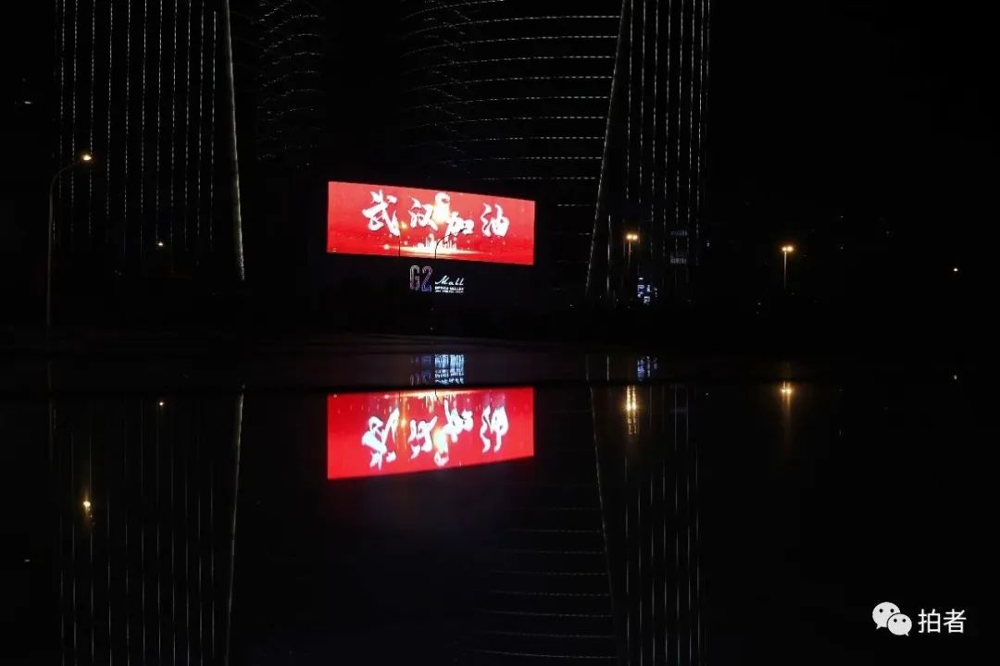
△ 街头的广告屏上，打出了“武汉加油”字样。摄影/解放日报记者赖鑫琳
焦点事件
▼
世界卫生组织2月11日疫情报告显示，世卫组织将此次由新型冠状病毒引发的疾病命名为COVID-19(2019冠状病毒病)。报告称，越来越多的证据表明，2019-nCoV(2019新型冠状病毒)与其他已知的在蝙蝠中传播的冠状病毒存在关联，更具体地讲则是和蝙蝠亚种菊头蝠存在关联。
武汉决定自2月11日起对所有住宅小区实行封闭管理。
━━━━━
- 2月12日 -
正月十九
截至当日24时，全国累计报告确诊病例59804例，死亡1367例，治愈出院5911例。
湖北省累计确诊病例48206例（武汉市32994例），死亡1310例（武汉市1036例），治愈出院3441例。
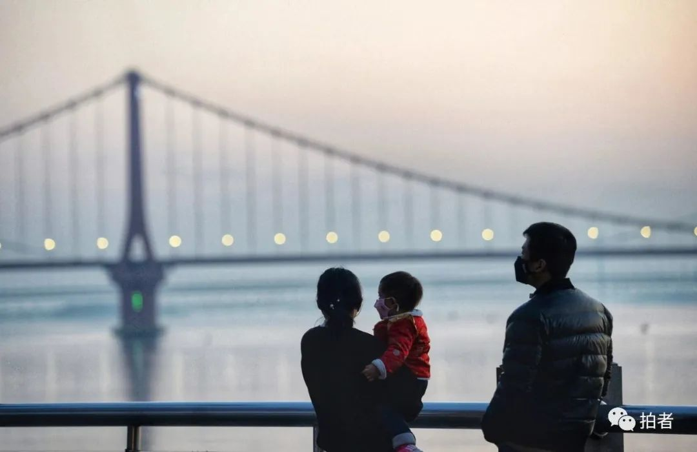
△ 武昌江滩，落日余晖下，戴口罩的一家三口。摄影/成都商报·红星新闻记者王效
焦点事件
▼
湖北省市疫情防控指挥部已累计调运新冠病毒核酸检测试剂盒18万人份，累计下发至各检测机构核酸试剂盒9万余人份，累计检测新冠病毒核酸72247人次。武汉市已有40家机构能开展新冠病毒核酸检测工作，日检测能力可达8000至10000人份。
━━━━━
- 2月13日 -
正月二十
截至当日24时，全国累计报告确诊病例63851例（湖北省核减1043例），死亡1380例（湖北省因重复统计,核减108例），治愈出院6723例（湖北省核减269例）。
湖北省累计报告确诊病例51986例（武汉市35991例），死亡1318例（武汉市1016例），治愈出院3862例。
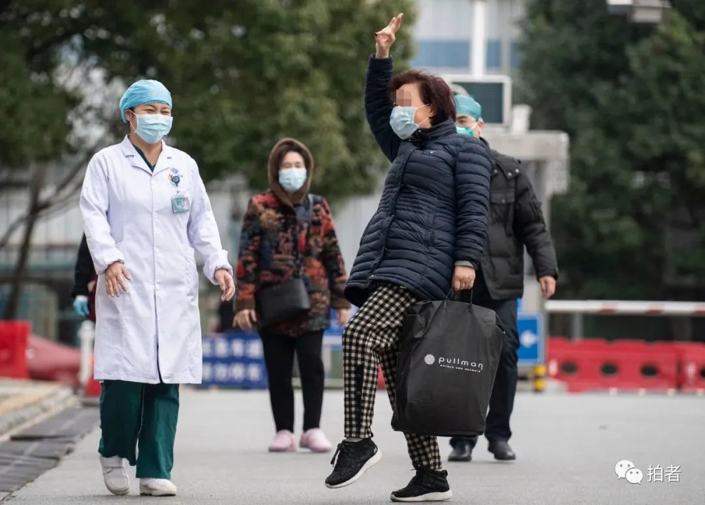
△ 武汉协和医院西院区，一名治愈后出院的新冠肺炎确诊患者高兴地跳起舞来。当天下午，支援该院区的北京医疗队收治的4名新冠肺炎确诊患者顺利出院。摄影/新京报记者陶冉
焦点事件
▼
中共中央决定：应勇同志任湖北省委委员、常委、书记，蒋超良同志不再担任湖北省委书记、常委、委员职务。
王忠林同志任湖北省委委员、常委和武汉市委书记，马国强同志不再担任湖北省委副书记、常委、委员和武汉市委书记职务。
━━━━━
- 2月14日 -
正月廿一
截至当日24时，全国累计报告确诊病例66492例，死亡1523例，治愈出院8096例。
湖北累计确诊病例54406例（武汉市37914例），死亡1457例（武汉市1123例），治愈出院4774例。
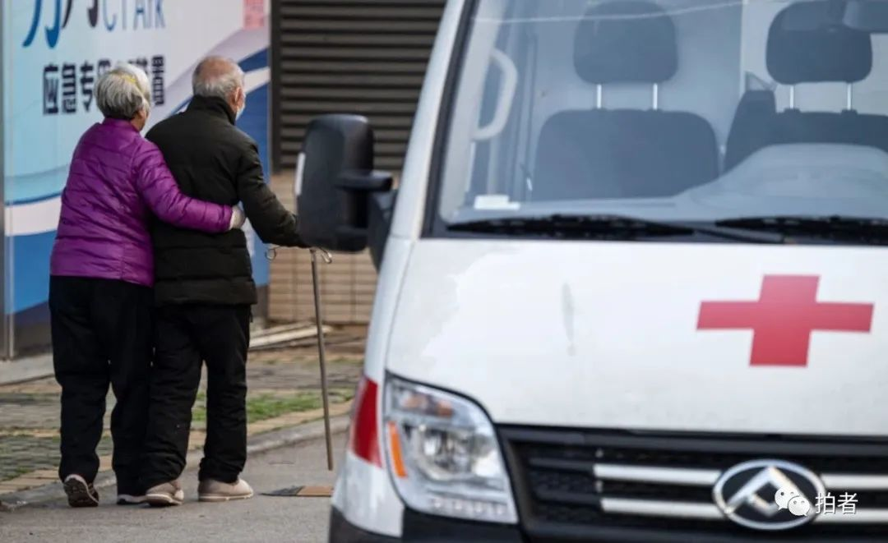
△ 蔡甸区，老人相互搀扶前去武汉协和医院西院区做CT检查。摄影/新京报记者陶冉
焦点事件
▼
公开招募献血者首日，武汉新冠肺炎康复者血浆捐献点迎首位献血者。
━━━━━
- 2月15日 -
正月廿二
截至当日24时，全国累计报告确诊病例68500例（江西省核减1例），死亡1665例，治愈出院9419例。
湖北省累计报告确诊病例56249例（武汉市39462例），死亡1596例（武汉市1233例），治愈出院5623例。

△ 当天，武汉协和肿瘤医院改为定点医院收治病患，工作人员冒雪帮助新冠肺炎患者转运。摄影/长江日报记者陈卓
焦点事件
▼
2月15日，一则关于“武汉病毒研究所一名女研究生黄燕玲是新冠病毒肺炎零号病人”的消息在网络流传。2月15日晚间，新京报记者就此事向中国科学院武汉病毒研究所研究员石正丽、流感病毒实验室研究员陈全姣求证。两人均表示，对病毒所是否有一位名叫黄燕玲的女研究生并不掌握，但可以保证武汉病毒所目前无一人感染新冠肺炎。
━━━━━
- 2月16日 -
正月廿三
截至当日24时，全国累计报告确诊病例70548例，死亡1770例，治愈出院10844例。
湖北省累计报告确诊病例58182例（武汉市41152例），死亡1696例（武汉市1309例），治愈出院6639例。

△ 江汉区花楼街，雪后初晴，一名行人张开双臂享受阳光。摄影/中青报·中青网记者鲁冲
焦点事件
▼
国家卫健委新闻发言人米锋在国务院联防联控机制新闻发布会上表示，截至2月15日24时，湖北、全国其他省份重症病例占确诊病例的比例均明显下降。
湖北发布进一步强化新冠肺炎疫情防控的通告。其中指出，城乡所有村组、社区、小区、居民点实行24小时最严格的封闭式管理。严管外来车辆，非必需不进出；严管外来人员，非必要不入内；严管住户外出，药品和必需生活物品等可采取集中采购配送等方式进行。
针对网上热议的“武汉病毒所一研究生系零号病人”的信息，中国科学院武汉病毒研究所回应零号病人传闻：黄燕玲身体健康，未曾被感染。
━━━━━
- 2月17日 -
正月廿四
截至当日24时，全国累计报告确诊病例72436例（新疆生产建设兵团核增2例），死亡1868例，治愈出院12552例（北京核增7例）。
湖北省累计报告确诊病例59989例（武汉市42752例），死亡1789例（武汉市1381例），治愈出院7862例。
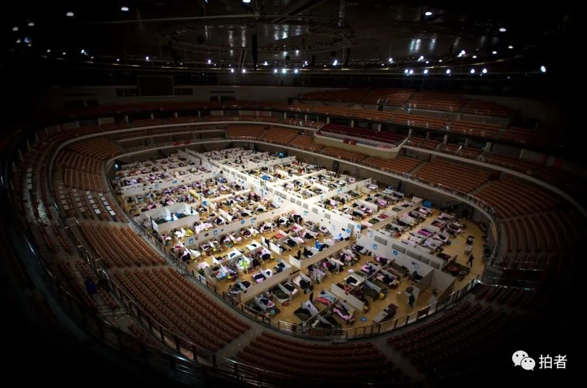
△ 平稳运转中的武汉体育中心方舱医院。该方舱医院2月12日下午起正式收治新冠肺炎轻症患者，提供1100张医疗床位。摄影/肖艺九
焦点事件
▼
武汉市新冠肺炎疫情防控指挥部发布关于严格公共场所疫情防控措施的通告，严格公共场所关闭管理，必须开放的实行扫码入出。
针对网传武汉病毒所研究员陈全姣实名举报武汉病毒所所长王延轶泄露病毒一事，中国科学院武汉病毒所官网发布陈全姣声明，陈全姣表示，从未发布任何相关举报信息，对冒用本人身份捏造举报信息的行为表示极大愤慨，将依法追究造谣者的法律责任。
━━━━━
- 2月18日 -
正月廿五
截至当日24时，全国累计报告确诊病例74185例，死亡2004例，治愈出院14376例。
湖北省累计报告确诊病例61682例（武汉市44412例），死亡1921例（武汉市1497例），治愈出院9128例。
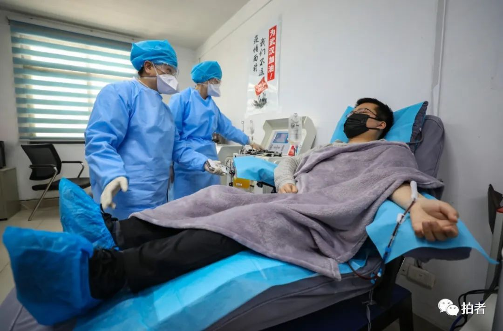
△ 感染新冠肺炎病毒的武汉市第四医院医生孔岳锋，在康复并安全度过了14天的医学观察隔离期后，来到武汉市血液中心捐献自己的血浆，救治新冠肺炎重症患者。摄影/长江日报记者陈卓
焦点事件
▼
武汉市人民代表大会常务委员会发布关于依法全力打赢新冠肺炎疫情防控武汉保卫战的决定，其中提到，对不服从疫情管控的，可依法对其采取强制措施。
10时30分，武汉武昌医院院长刘智明因感染新冠肺炎在武汉同济医院去世，享年51岁。
━━━━━
- 2月19日 -
正月廿六
截至当日24时，全国累计报告确诊病例74576例（江西、河南、云南省各核减1例），死亡2118例，治愈出院16155例。
湖北省累计确诊病例62031例（武汉45027例），死亡2029例（武汉1585例），治愈出院10337例（武汉5448例）。
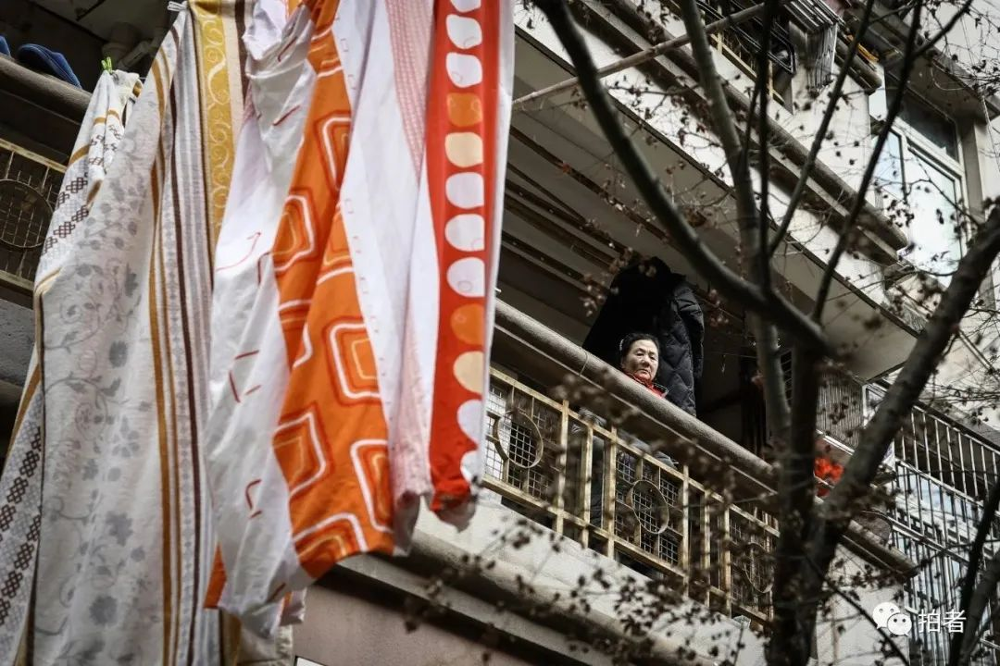
△ 百步亭社区，窗边的一位老人。当天是武汉市为期3天的集中拉网式大排查的最后一天，百步亭社区下辖11个小区，常住人口约13万。就在一个月前，这里举办了一场“万家宴”聚会。摄影/中青报·中青网记者赵迪
焦点事件
▼
国家卫生健康委员会发布了《新型冠状病毒肺炎诊疗方案（试行第六版）》。新方案的诊断标准取消了湖北省和湖北省以外其他省份的区别，统一分为“疑似病例”和“确诊病例”两类，明确确诊病例必须满足核酸检测阳性或基因测序高度同源的证据之一，在治疗方面增加了“康复者血浆治疗”，建议适用于病情进展较快、重型和危重型患者人群。方案增加了“出院后注意事项”，建议应继续进行14天自我健康状况监测。还在中医药治疗方面增加了适用于重型、危重型的中成药的具体用法等。
━━━━━
- 2月20日 -
正月廿七
截至当日24时，全国累计报告确诊病例75465例，死亡2236例，治愈出院18264例。
湖北省累计报告确诊病例63088例。

△ 拉网排查结束后，外卖员隔着铁门，给仍处封闭管理状态的武昌区一小区住户递送预订物资。摄影/成都商报·红星新闻记者王效
焦点事件
▼
北京民政局回应韩红爱心慈善基金会被举报一事：经调查，韩红基金会自成立以来，总体上运作比较规范，特别是在抗击疫情中做了大量工作，应予以支持和肯定。但也发现部分投资事项公开不及时，在未取得公开募捐资格前有公开募捐行为。
━━━━━
- 2月21日 -
正月廿八
截至当日24时，全国累计报告确诊病例76288例，死亡2345例，治愈出院20659例。
湖北省累计报告确诊病例63454例（武汉市45660例），死亡2250例（武汉市1774例），治愈出院13557例。

△ 蔡甸区，路边晒太阳的流浪猫和流浪狗。摄影/新京报记者陶冉
焦点事件
▼
据央视新闻报道，记者21日从武汉市新冠肺炎疫情防控指挥部获悉，为进一步做好援汉医疗队服务保障工作，武汉明确提出：一线医护人员工作10天休息不少于2天、医疗队员用餐标准每人每天200元、按照人均6000元标准发放一次性慰问补助等多项政策待遇。
国务院联防联控机制新闻发布会上，司法部监狱管理局负责人何平介绍，全国共有湖北、山东、浙江3个省5个监狱发生了罪犯感染疫情。
━━━━━
- 2月22日 -
正月廿九
截至当日24时，全国累计报告确诊病例76936例，死亡2442例，治愈出院22888例（安徽核减1例）。
湖北省累计确诊病例64084例（武汉市46201例），死亡2346例（武汉市1856例），治愈出院15299例（武汉市8171例）。

△ 武汉出现大雾天气，局部地区能见度小于100米，市民骑车从大雾中驶过。 摄影/新京报记者陶冉
焦点事件
▼
凌晨，国家卫生健康委员会发布关于修订新冠肺炎英文命名事宜的通知，决定将“新型冠状病毒肺炎”英文名称修订为“COVID-19”，与世界卫生组织命名保持一致，中文名称保持不变。
目前，全国疫情发展拐点尚未到来。
数据来源 国家卫生健康委员会官方网站 湖北省卫生健康委员会官网
点击下图进入”全国新型冠状病毒感染肺炎实时地图“

*值班编辑 吾彦祖*


本文未经新京报书面授权不得转载使用
欢迎朋友圈分享

原文链接 备份链接 IMF认为，若一切向好的方向发展，中国经济有望从二季度开始恢复正常。近日个别国家和地区确诊病例激增，确诊首例新冠病毒感染病例的国家和地区也在增加，是新感染群体的感染源越来越难以查明？还是疫情传播到了某个新的临界点？ …
原文链接 备份链接 岛语 非常时期，武汉成了全国人民挂念、祈福的城市。封城后，武汉人民的真实生活是什么样？ 武汉在发生哪些变化？ 正和岛自1月26日起特别推出“叶青专栏”。叶青是一位定居武汉40年的市民，也是一名学者和官员。在过往多期的专 …
原文链接 备份链接 国家卫健委网站 澎湃新闻记者 马作鹏 2月18日0—24时，31个省（自治区、直辖市）和新疆生产建设兵团报告新增确诊病例1749例，新增重症病例236例，新增死亡病例136例（湖北132例，黑龙江、山东、广东、贵州各1 …
原文链接 备份链接 经历了“封城”一个月的武汉，到底怎么样了? 全文2100字，阅读约需4分钟 点击下图进入阅读新京报特别策划 *数据新闻编辑 **陈华罗、李媛 新媒体设计 高俊夫、李亚珍 校对 何燕* ▲300秒回顾武汉战疫：宏大数 …
原文链接 备份链接 岛语 非常时期，武汉成了全国人民挂念、祈福的城市。封城后，武汉人民的真实生活是什么样？随着抗“疫”有条不紊的进行，武汉发生了哪些变化？还存在哪些问题？ 正和岛自1月26日起特别推出“叶青专栏”。叶青是一位定居武汉40年 …